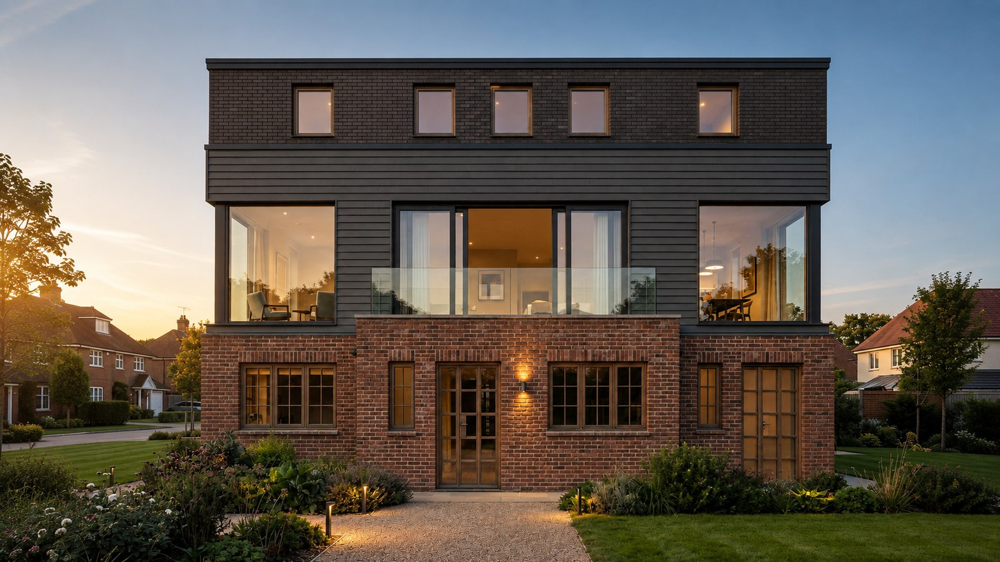
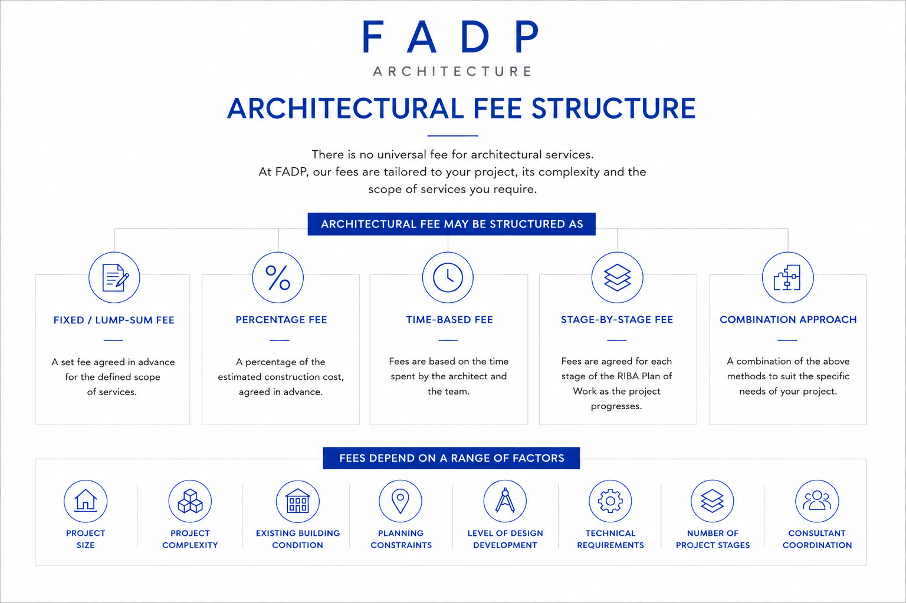
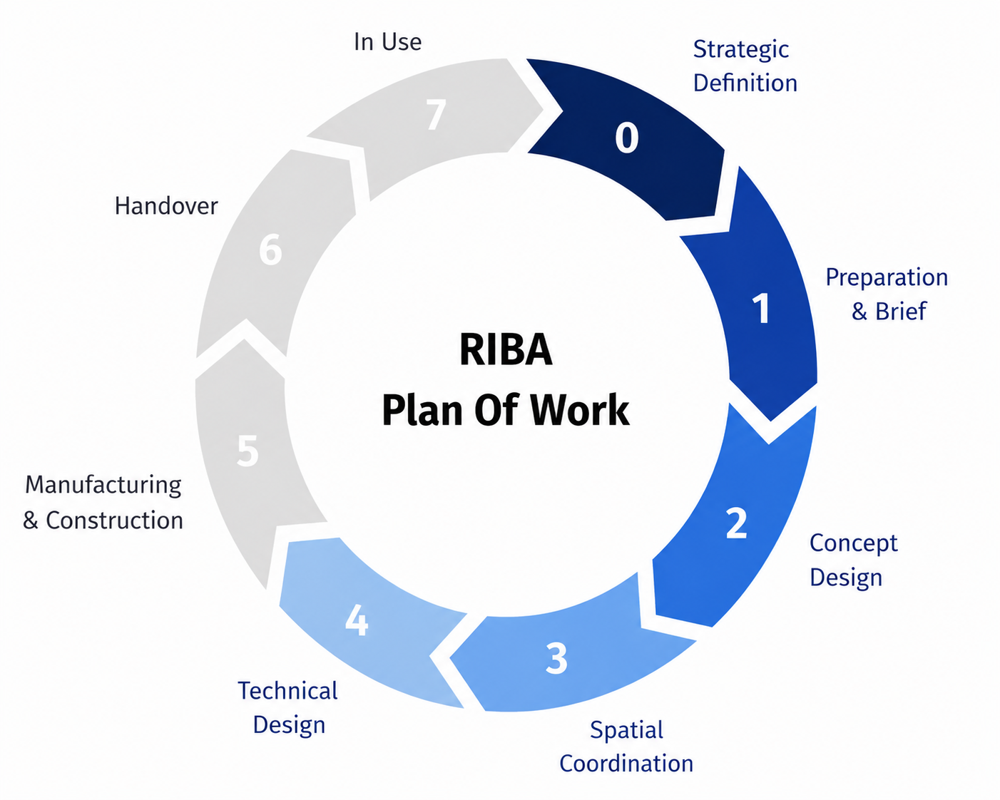
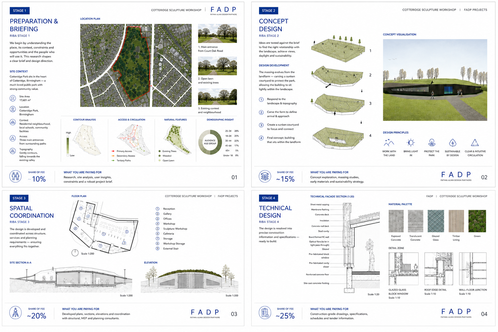

How much does an architect cost in the United Kingdom in 2026?

Planning an extension, renovation, loft conversion or new home? Understanding architectural fees is one of the first steps towards setting a realistic budget.
One of the first questions homeowners ask is: how much does an architect cost in the United Kingdom? The honest answer is that there is no single figure. Fees vary with the size and complexity of the project, the existing property, planning requirements, the level of design required, and how far you want the practice to take the work.
At FADP, we believe architectural fees should be clear, proportionate, and related to what your project actually needs. This guide sets out how fees are calculated, what they typically include, how the RIBA Plan of Work relates to the design process, and what other costs to budget for.
How fees are structured
There is no universal fee that applies to every residential project. The Architects Registration Board confirms there is no standard tariff, because costs vary from project to project.
Architectural fees may be structured as fixed or lump-sum fees, percentage-based fees, time-based fees, stage-by-stage fees, or a combination. The right structure depends on the project and the scope of services required.

Factors that influence the fee include project size, project complexity, existing building condition, planning constraints, level of design development, technical requirements, number of project stages, and consultant coordination.
For example, one client may appoint us for feasibility and planning only. Another may want the whole appointment through technical design, tender information, and construction-stage services. These are substantially different pieces of work.
When comparing fees, do not look at the headline figure alone. Consider how the fee is calculated, what additional costs may arise, and what work is included within the appointment. The right question is not how much but what exactly am I getting for the fee?
What a fee typically includes
Depending on the project and the agreed scope, architectural services can include: initial consultation, preparation and briefing, feasibility studies, existing building assessment, concept design, planning drawings, planning applications, design development, spatial coordination, Building Regulations information, technical drawings, consultant coordination, tender information, and construction-stage services.
Not every project needs every stage. The scope should be agreed before work begins, so you understand which stages are included, what will be delivered, and what may fall outside as additional work.
The RIBA Plan of Work
The RIBA Plan of Work is the recognised industry framework for organising the briefing, design, construction, and use of a building. The full plan is organised into eight stages, from Stage 0 to Stage 7. FADP’s services can be structured around the stages most relevant to your project, with particular focus on Stages 1–4.

Stage 1 — Preparation and briefing
The project is defined in greater detail. This can involve understanding the property, establishing the brief, identifying site information, considering feasibility, establishing budget parameters, considering programme, and identifying planning constraints. The objective is to know what the project needs to achieve before the design develops further.
Stage 2 — Concept design
The brief becomes an architectural concept. The design can explore floor plans, massing, form, natural light, circulation, materials, spatial relationships, and initial structural considerations. The objective is to establish the overall design approach in response to the brief.
Stage 3 — Spatial coordination
The concept develops into a more coordinated proposal. Plans, sections, and elevations are developed alongside relevant engineering and specialist information. Planning requirements are addressed at this stage. Under the RIBA framework, planning applications are typically submitted towards the end of Stage 3.
An important distinction: planning approval is not the end of design. It is one part of the wider process.
Stage 4 — Technical design
The project moves from “what should we design?” to “how will it be built?” Technical design may include construction drawings, construction details, specifications, building systems, structural coordination, Building Regulations information, and specialist consultant information. RIBA identifies Stage 4 as the stage in which the design information required to manufacture and construct the project is completed.
This is why a planning-only service is very different from a full design and technical appointment.

What other costs should you budget for?
Your architectural fee is only part of the overall project budget. Depending on the project, you may also need to allow for:
Planning fees. Statutory fees paid to the local planning authority.
Building Control. Separate fees associated with Building Regulations approval.
Structural engineering. Often required for extensions, structural alterations, and new structural elements.
Surveys. Depending on the property and scope, this may include measured building surveys, topographical surveys, structural surveys, drainage surveys, and specialist surveys.
Party Wall services. Where the Party Wall etc. Act 1996 applies, you may need to appoint a Party Wall surveyor.
Specialist consultants. Depending on the project, additional specialist advice or reports may be required.
Construction and contingency. The construction cost itself will form the largest part of the overall budget, alongside a sensible contingency for unforeseen costs.
These are not automatically included within an architectural fee. Your appointment should clearly identify what is included, what is excluded, and which costs are payable separately.
How FADP approaches fees
We begin by understanding the project before proposing an appropriate scope of services. Five things shape the fee.
Your property. What exists today? Understanding the existing building, site conditions, and constraints provides the foundation for design.
Your brief. What do you want to achieve? We establish your requirements, priorities, and aspirations.
Your budget. What level of investment is realistic? Understanding the available budget helps shape the scope.
Your planning context. What constraints and opportunities affect the property? Planning considerations have a significant influence on what may be achievable.
Your ambitions. What should the finished project achieve? The design should respond not only to the practical brief but to the character and long-term objectives of the project.
We then propose a scope and a clear fee. Depending on the project, this may run: preparation and briefing → concept design → spatial coordination → technical design → construction. The exact scope is tailored to the requirements of the individual project.
What to ask before appointing anyone
Before you commit, ask the following.
What stages are included? Understand whether the appointment covers feasibility, design, planning, technical design, and/or construction.
What will I receive? Ask what drawings, documents, and deliverables are included.
What is excluded? Understand whether surveys, structural engineering, planning fees, Building Control, and other consultants are separate.
How are changes handled? Ask what happens if the brief changes or extra work becomes necessary.
Who will manage the project? Understand who your main point of contact will be and who will coordinate the design team.
How is the fee calculated? Establish whether the fee is fixed, percentage-based, time-based, or by stage.
Will it be in writing? Terms of engagement should clearly set out the work to be done, the fee or method of calculation, responsibilities, and any limitations. ARB recommends clients understand the contract, fees, scope, and potential additional costs before work begins.
The right service depends on your project
There is no single service that is right for every homeowner. A straightforward planning application may require a different level of involvement from a complex extension, whole-house refurbishment, or new build. The important thing is to understand what you need, what each stage achieves, what your fee covers, and what other costs to allow for.
The RIBA Plan of Work provides a useful framework for the progression of a project. The actual scope of services should be tailored to what your project needs.
More questions?
See our full FAQ page — answers to the most common questions about fees, planning permission, party walls, surveys, and how we work.
Ready to understand your project?
Tell us about your property, what you want to change, and what you hope to achieve. A director takes every first meeting.
Get in touch